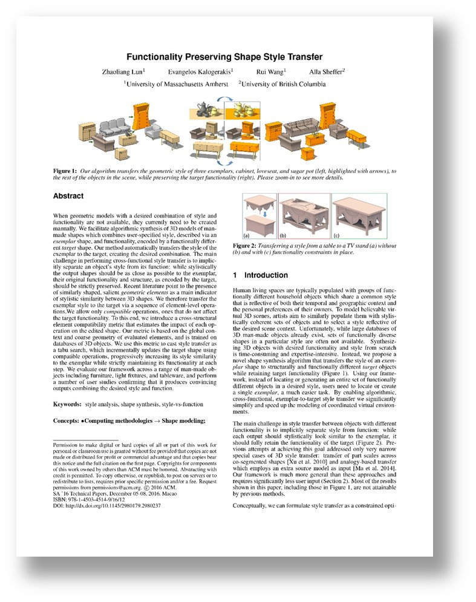

Functionality Preserving Shape Style Transfer
Zhaoliang Lun, Evangelos Kalogerakis, Rui Wang, Alla Sheffer
ACM Transactions on Graphics (Proc. ACM SIGGRAPH ASIA 2016)
Preprint: [PDF]
Abstract
When geometric models with a desired combination of style and functionality are not available, they currently need to be created manually. We facilitate algorithmic synthesis of 3D models of man-made shapes which combines user-specified style, described via an exemplar shape, and functionality, encoded by a functionally different target shape. Our method automatically transfers the style of the exemplar to the target, creating the desired combination. The main challenge in performing cross-functional style transfer is to implicitly separate an object's style from its function: while stylistically the output shapes should be as close as possible to the exemplar, their original functionality and structure, as encoded by the target, should be strictly preserved. Recent literature point to the presence of similarly shaped, salient geometric elements as a main indicator of stylistic similarity between 3D shapes. We therefore transfer the exemplar style to the target via a sequence of element-level operations. We allow only compatible operations, ones that do not affect the target functionality. To this end, we introduce a cross-structural element compatibility metric that estimates the impact of each operation on the edited shape. Our metric is based on the global context and coarse geometry of evaluated elements, and is trained on databases of 3D objects. We use this metric to cast style transfer as a tabu search, which incrementally updates the target shape using compatible operations, progressively increasing its style similarity to the exemplar while strictly maintaining its functionality at each step. We evaluate our framework across a range of man-made objects including furniture, light fixtures, and tableware, and perform a number of user studies confirming that it produces convincing outputs combining the desired style and function.
Paper
|  |
►StyleTransfer.pdf, 14 MB
Zhaoliang Lun, Evangelos Kalogerakis, Rui Wang, Alla Sheffer, |
Video
Supplementary Material
The following archive contains more style transfer results generated from our algorithm and extra user study data. Please refer to our paper for more details.
►supplementary.7z, 28 MB
Code
The following archive contains source codes for our algorithm. Please read the readme file within the archive for more details.
►code.7z, 5 MB
Data
The following archive contains data for demonstrating the style transfer algorithm. Please read the readme file within the archive for more details.
►data.7z, 1 MB
Presentation
The following files contain the slides presented in SIGGRAPH ASIA 2016 at Macao.
►Presentation.pptx, 31 MB
►Presentation.pdf, 10 MB
Copyright
All 3D shape models used in this project are downloaded from the Internet and the original authors hold the copyright of the models. The code and data are provided for the convenience of academic research only.
Acknowledgments
Kalogerakis and Wang gratefully acknowledge support from NSF (CHS-1422441, CHS-1617333, IIS-1423082). Sheffer gratefully acknowledges support from NSERC discovery and DAS grants. We thank Nicholas Vining for proofreading the paper and narrating the video, Mikhail Bessmeltsev for useful suggestions on the figures, and the anonymous reviewers for their comments.